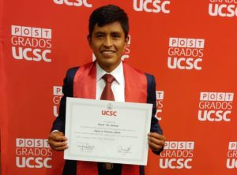

WONAPDE 2024: Seventh Chilean Workshop on Numerical Analysis of Partial Differential Equations
Ceremonia de Graduación: Eduardo Vino Machicado
XXXV Jornada de Matemática de la Zona Sur

Defensa de Tesis de Magíster: Camila Campos
| ENERO 15 al 19, 2024 WONAPDE 2024: Seventh Chilean Workshop on Numerical Analysis of Partial Differential Equations |
|
|  | Abril 21, 2023 Ceremonia de Graduación: Eduardo Vino Machicado |
| ABRIL 19 al 21, 2023 XXXV Jornada de Matemática de la Zona Sur |
|
|
DICIEMBRE 07, 2022 Defensa de Tesis de Magíster: Camila Campos |